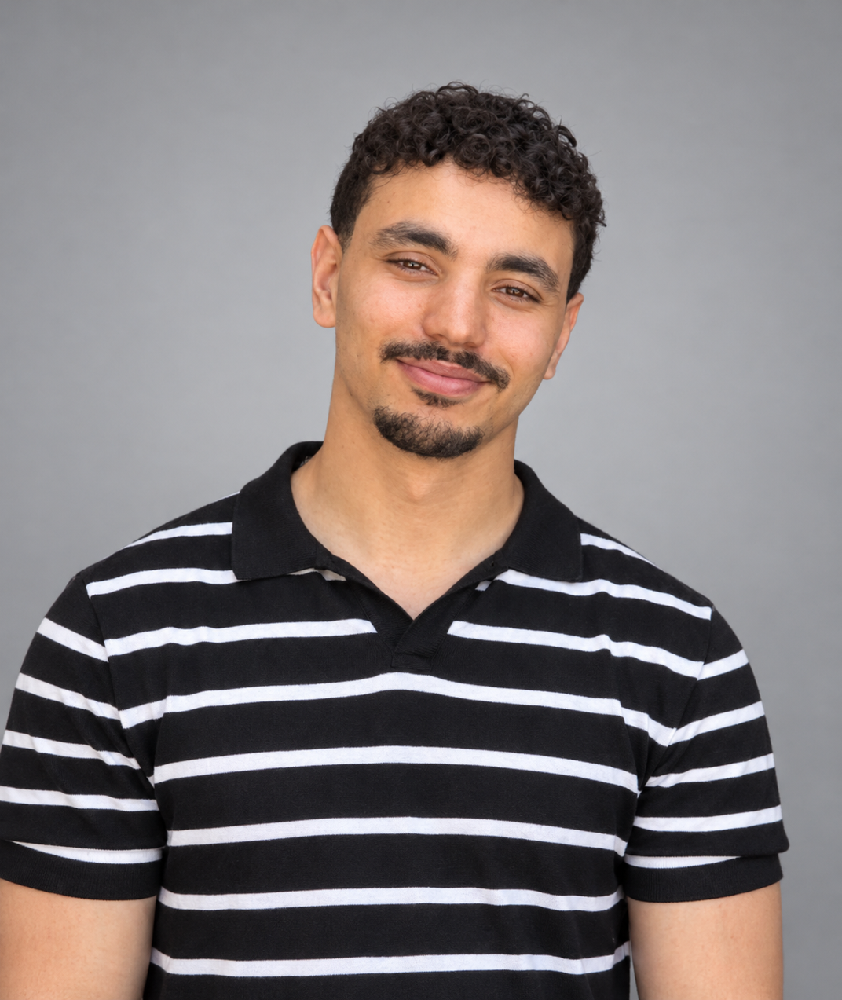

Industrialization · Quality · Continuous Improvement
Final-year engineering student at INSAT (Industrial Computing & Automation), with two internships at Asteelflash Tunisia for Bosch-group customers.
I am a final-year engineering student at INSAT in Industrial Computing and Automation. Through my internships and projects, I have built an industrial engineering profile focused on industrialization, quality and continuous improvement, with a background in automation and data.
At Asteelflash, I first designed an automated traceability station with a Poka-Yoke. I then worked with the NPI team on a new production line, ran capability and capacity studies, and led a DMAIC project that cut the defect rate of a functional test by 65%.
I am following a Lean Six Sigma Green Belt training, and I am looking for a 6-month end-of-studies internship starting in February 2027.
Tunis, Tunisia · open to international mobility
Led a national reference event in robotics, AI and Industry 4.0, over 7 days with a budget of 80,000 TND. Managed a team of 50 people and coordinated industrial, institutional and international partners.
Led a team of 6 people: partner relations, negotiation and follow-up of commitments.
INSAT, National Institute of Applied Sciences and Technology, Tunis
INSAT, Tunis
Professional training
Lycée Kheireddine Ariana · Highest honors (18.21/20)
"His knowledge of design, technical analysis and process improvement enables him to tackle the challenges of an industrial environment effectively."Industrialization Engineer, Asteelflash
"With a strong analytical mind, he has solid knowledge of quality tools such as 5 Whys, Ishikawa, PDCA and FMEA, as well as document management and KPI tracking."Customer Quality Engineer, Asteelflash
Excerpts translated from French. Full letters available on request.
Available for a 6-month end-of-studies internship starting in February 2027, in industrialization, quality or continuous improvement.